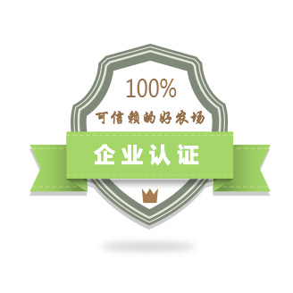

|
|
增值服务>
企业认证

免责声明1、提交认证申请的农场必须保证信息真实性和完整性，以便获得渠道商的全面了解和信任； 2、信息不属实及不完整将不予通过认证； 3、农场必须配合义田帮手客户积极完善相关信息； 4、认证费用一经收取，不予退还； 5、认证以年为单位收取，认证有效期为一年，认证到期需要重新申请和审核。 认证介绍
1、通过企业认证后，农场在义田帮手上的数字地图、四季田景、种植信息、产品供应、绿色履历、环境信息、联系方式等都会通过义田优品平台向优质渠道商展示出来，轻松获得更多客户； 2、可以享受义田优品组织的“拼货”、“市集”、“渠道对接会”、“品鉴会”等活动和服务； 3、可以搜索和浏览渠道商的采购信息，并对采购信息报价，感兴趣的渠道商会与您联系； 4、合格使用者还可以享受义田优品平台的重点宣传和推广服务。
1、按照要求完善您的信息； 2、在线提交认证申请并缴纳认证费用； 3、我们将在48小时内（工作日顺延）对您的信息进行审核，如不符合要求，将进行电话沟通指导，直至信息完善符合要求为止； 4、认证通过，您将收到电话或短信通知，您也可以通过服务中心查看您的认证进度。
|


 企业认证的好处
企业认证的好处
 认证需完善的信息
认证需完善的信息
 认证流程
认证流程
 什么是义田优品
什么是义田优品